Desarrollando a otros…
Un líder FANDELI ayuda a otros
a mejorar sus capacidades para aprender de las experiencias reales en el trabajo
y así,
potenciar
el rendimiento dentro de la
organización.
¿Estás listo para desarrollar a tus colaboradores?
¡Empecemos!